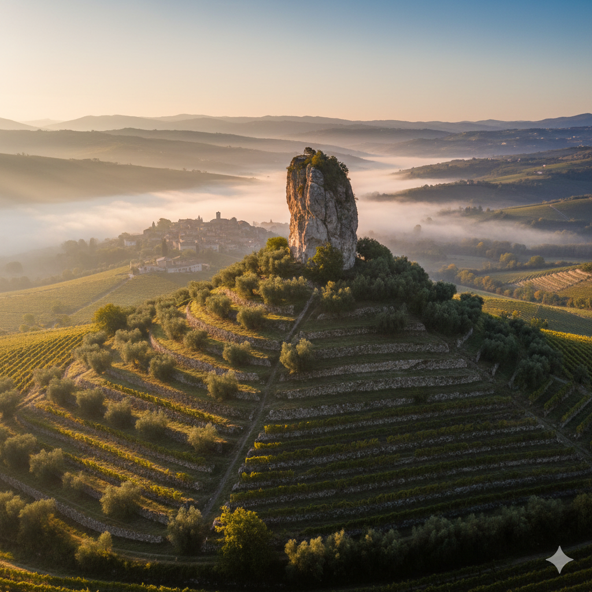

L'Anima della Pietra e dell'Olivo
Le Antiche Tenute di Conti Nicoli non sono solo un’azienda agricola, ma il custode di un legame millenario tra l’uomo e le colline veronesi. Tra le vigne e gli ulivi di Negrar di Valpolicella, Grezzana e Verona, la nostra famiglia coltiva l'onore prima ancora del frutto.
La Sengia Sbusa: Il Nostro Simbolo
Al centro della nostra identità svetta la Sengia Sbusa, un imponente monolite naturale forato dal tempo e dagli elementi. Per noi, quella roccia rappresenta la resilienza: come le radici dei nostri ulivi Grignano si fanno strada tra le fessure della pietra, così la nostra passione supera ogni fatica.
"Per Ardua ad Honorem" - Attraverso le fatiche, verso l'onore.
Dalle "Marogne", i muretti a secco patrimonio dell'umanità UNESCO che sorreggono i nostri terrazzamenti, fino alla tavola dei palati più raffinati, ogni goccia del nostro olio porta con sé il sapore della tradizione veronese e la fierezza delle nostre radici.